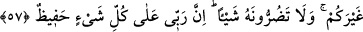

57. “Eğer yüz çevirirseniz, şüphesiz benimle size gönderileni size bildirdim.
Rabb’im (dilerse) sizin yerinize başka bir kavim getirir. Siz O’na hiçbir zarar
veremezsiniz. Şüphesiz Rabb’im her şeyi gözetendir.”
“Eğer yüz çevirirseniz” Şayet yüz çevirmeye devam edecek olursanız, bunda artık
benim günahım yok. “şüphesiz benimle size gönderileni size bildirdim.” Yâni ben
üzerime düşen tebliğ görevini yerine getirdim ve delillerle sizi susturdum. Artık cevap
veremez hale geldiniz. Yalanlama ve inkardan başka bir şey yapmadınız. İşte bu
zikredilenler, onlara verilecek cezanın delili olmaktadır.
“Rabb’im (dilerse) sizin yerinize başka bir kavim getirir.” Allah Teâlâ sizi yok edip
memleketinize, mal ve mülkünüze mirasçı olacak başka bir kavim getirir. Sırt dönerek
ve yüz çevirerek “siz O’na hiçbir zarar veremezsiniz.” Çünkü zarar ve fayda görmek
O’nun hakkında düşünülmesi mümkün olmayan şeylerdir. Bu bakımdan siz sadece
kendinize zarar verirsiniz.
“Şüphesiz Rabb’im her şeyi gözetendir.” Yaptıklarınız O’na gizli kalmaz, size
onların karşılığını vermeyi de unutmaz.
Bilesin ki Allah Teâlâ’ya tevekkülün, güvenip dayanmanın gerekli olduğu ve yine
Allah’ın koruyup kollayıcı olduğu şöyle açıklanmıştır:
1- Allah Teâlâ’nın Rablığı herkes için geneldir. Terbiye eden ise terbiye ettiğinin
işlerini çekip çevirir, onu korur. Böylece o başkasının korumasına muhtaç olmaz.
2- Nefis sâhibi herkes Allah’ın hükmü/kahrı altındadır, bir şey yapmaktan ve
başkasına tesir etmekten âciz bir esirdir. Öyle ise ondan korkmaya gerek yoktur.
3- Allah Teâlâ kendi vahdetinin gölgesi olan çokluk/kesret âleminde adâlet yolu
üzeredir. Onun için günah ve suçu sebebiyle hak etmesi dışında kimseyi kimseye
musallat etmez. Küçük günahları sebebiyle de olsa kimseyi kusuru yokken
cezalandırmaz. Evet, bazen kişiyi tezkiye edip derecesini yükseltmek maksadıyla
bazılarına cezâ verir.
Bütün bunlardan çıkarılacak netice, müşriklerde de tanrılarında da hiçbir güç
bulunmadığıdır. Öyleyse güç ve kuvvet ancak Allah’a âittir. Allah Teâlâ hiç kimseye
zerre kadar bile haksızlık etmez. Haksızlık gibi gözüken fiilleri O’nun sır ve hikmetinin
gizliliğinden ileri gelmektedir. Ârif olan, ilâhî sırlara bakar ve olanları bir takım
hikmetlere yorar.
Hikâye edilir ki Buhâra şehrinde su satan biri, bir kuyumcunun evine otuz sene
boyunca su taşımış. Kuyumcunun da son derece güzel, sâliha bir hanımı varmış. Bir gün
sucu yine âdeti üzere gelmiş, fakat kadının elini tutup sıkmış. Kuyumcu eve gelince
hanımı:
“–Bugün Allah rızasına aykırı olarak bir şey yaptın mı?” diye sormuş. Kocasından